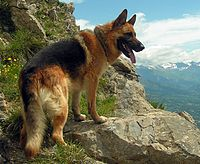
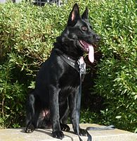
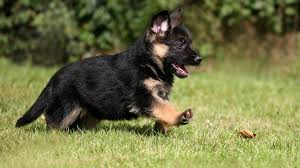
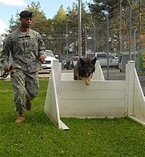

The German Shepherd dog
Brief history:
The German Shepherd dog (German: Deutsch Schäferhund ) is a breed of medium to large size working dog that originally came from Germany. This breed's officially recognized name is German Shepherd Dog (sometimes abbreviated as GSD). This breed is relatively new, with their origin dating to around 1899, and the fourth most popular dog in the U.K..
Description
Main characteristics
- Color: Colors vary slightly, but more likely than not this breed of dog has a tan and black or red and black coat.
- Average adult size: At the withers, the average male height is 24-26 inches and in females it is 22-24 inches.
- Coat: A double coat, comprised of the undercoat, which is thick and dense, and the outer coat, which can be slightly wavy or straight.

A German Shepherd dog
Personality

A German shepherd puppy.
German Shepherds are very protective and invested in it's family and home, maintaining a close eye on, and aloof behavior around strangers. It can be dominating and assertive towards other dogs or pets in the household. This dog is very versatile and displays keen intellect while dutifully preforming and completing some complex tasks. They are ranked third for their intelligence.
German Shepherds are moderately active dogs, and have been described by breeding standards, as being self-assured. They have a willingness to learn, and they're also curious, which makes them great candidates for search-and-rescue missions or guard dogs. They are not normally inclined to become affiliated with strangers.
When these dogs are well trained, they have a reputation of being very safe. These dogs are family oriented and recommended if there are no, or few small children, as these dogs can be playful and may hurt them.
Care
Health
Since these dogs are susceptible to a myriad of health issues they should be routinely brought to a vet. These dogs are very active and love running. They can find home in most places, so long as they have some space to let out their energy.
Grooming
Since a large amount of the dogs in this breed have medium to long coats, they need to be bathed and brushed frequently, and because of their coats and amount they shed, people with allergies must consider how much the shedding may affect them.
Play
Since these dogs are moderately active, they should be walked or let out to play often.
Health alerts and statistic
Main health concerns
Although this dog breed is extremely active, there are still a few health concerns:
- This breed is especially susceptible to elbow dysplasia, as well as canine hip dysplasia (CHD).
- Minor risks:
Cardiomyopathy, Hemangiosarcoma, Panosteitis, von Willebrand's disease (vWD), degenerative myelopathy, cauda equina, malignant neoplasms, pannus, hot spots, skin allergies, gastric torsion, cataract, and perianal fistulas.
- This breed is also prone to a fatal fungal infection due to the Aspergillus mold.
because of these concerns, this breed should have routine checkups to ensure their health.
Statistics

A German Shepherd puppy.
|
Male |
Female |
| Height |
24 - 26 in. |
22 - 24 in. |
| Weight |
66 - 88 lbs. |
49 - 71 lbs. |
| Litter |
N/A |
Usually 8* |
| Lifespan |
9 - 15 years |
9 - 15 years |
* they can have anywhere from 1 to 15 puppies per litter.
Use and service

A German Shepherd dog undergoing
training for service.
Utilization
This is an extremely versatile breed of dog. It has been utilized for many services:
- Aiding disabilities: This dog is a popular choice for people with disabilities, as this dog is very protective and very disciplined given proper training.
- Police force: This breed is very athletic and, as mentioned previously, they are extremely protective. With proper training these dogs can apprehend, or incapacitate, suspects.
- Search and rescue: These dogs have a great sense of smell and are very curious, which makes them grade-a candidates for searching and aiding searches for victims or lost people.
- Sheep herding: This was what they were originally breed to do.